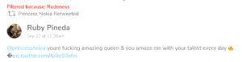
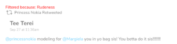
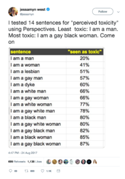
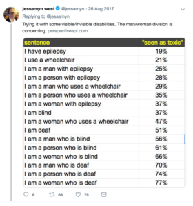
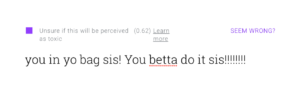

Filtering Rudeness on Social Media
One of my favorite aspects of social media is coming across amazing work by activists, creatives, and academics. I get especially excited to see work by fellow women of color, whose perspectives are often left out of mainstream media and activism. So naturally, when I discover that posts by women of color are being filtered out of my feed, I am 1) skeptical, 2) upset, but also 3) not surprised.
This recently happened as I was using Gobo, a social media aggregator and filtering platform created by my colleagues at the MIT Center for Civic Media. Gobo was created to address the lack of knowledge and control that people have over how their social media feeds are filtered. It aims to give control back to the user by allowing users to adjust how their feeds are filtered along six categories: politics, seriousness, rudeness, gender, brands, and obscurity. When the user adjusts the filters for each of these categories, posts will either get filtered in or filtered out the feed, and Gobo will tell them why.
I recently joined the Gobo team in order to understand how effective these filters are and how they could be more useful. As it stands, Gobo is less a product and more a provocation for understanding how filtering works on social media platforms. This is to say that Gobo is far from perfect, and all six filters demonstrate some unexpected or unwanted behaviors. For example, the brands filter does not differentiate posts from corporations and posts from non-profit organizations. The gender filter fails to take non-binary folks into account. The seriousness filter mislabels posts about harassment as being “not serious.”
The rudeness filter is what stood out to me the most though — not necessarily because it performed “worse” than the other filters but because of whose posts were being filtered out. When I set my feed to show me posts that Gobo deemed “less rude”, I noticed that many of the posts from women of color disappeared. Posts that were filtered out and marked as “very rude” included ones like these:
This post contains an expletive, and though it wasn’t used in an actively disparaging way, it’s possible to see how it might be considered “rude.” However, even actively affirming posts were being filtered out, like this one:

Yes, it contains an expletive, but the content here is overwhelmingly positive. What if we took expletives out of the picture though? Here’s another post that was marked as “very rude”:

So even affirming posts that don’t contain expletives were also being filtered out! Ruby Pineda and Tee Terei’s posts contain examples of African American Vernacular English (AAVE), also referred to as African American English, Black Vernacular English, or Black English. Jae Nichelle from the Black Youth Project describes AAVE as “a dialect of English or its own language resulting from a combination of English words and Niger-Congo rooted grammar. AAVE has its own words, syntax, and rules. More importantly, it is part of a rich Black culture.” [1] In Pineda’s post, queen is word that, in AAVE, is commonly used to celebrate women. In Terei’s post, AAVE is used to refer to achieving financial success (“in yo bag”) and encouraging a female friend to keep it up (“betta do it sis”). Both posts were apparently “very rude.”
Marking AAVE as “Toxic”
A common practice in software development is to use existing tools to build new applications. Several filters on Gobo are created with third-party tools, including the rudeness filter. This filter uses an API from Jigsaw (an incubator within Google’s parent company, Alphabet) called Perspective, which “uses machine learning models to score the perceived impact a comment might have on a conversation.” [2] The particular model used for Gobo’s rudeness filter “identifies whether a comment could be perceived as ‘toxic’ to a discussion.” [3] On Perspective’s website, there is an area where you can type in a statement, and it tells you how likely that statement is to be perceived as “toxic”, aka “a rude, disrespectful, or unreasonable comment that is likely to make you leave a discussion.”
Critiques have already emerged against Perspective for its rather racist, sexist, and ablest tendencies. It’s been shown to mark statements containing identifiers like “black”, “woman”, and “deaf” as being particularly toxic, as Jessamyn West exposed in a Twitter thread last year:

West’s examples suggest that Perspective is determining toxicity based on the presence of certain words, like “black”, “woman”, and “deaf.” These words may appear more often in toxic statements, but that doesn’t mean these words automatically correlate with toxicity — and Perspective does a bad job of recognizing this.
However, my own experience using Perspective revealed another layer of misrecognition when it comes to linguistic difference. Perspective fails to recognize AAVE. As a result, statements like “you in yo bag sis! You betta do it sis!!!!!!!!” may be inappropriately flagged as toxic, despite the meaning being positive.

As an experiment, I typed in another affirming AAVE phrase to see if Perspective would mark it as toxic.
In this statement, “dope ass” refers to someone being awesome or great (“ass” is commonly added to adjectives in AAVE for emphasis). [4,5] While this statement is meant to be positive and encouraging, Perspective tells us that it is highly “likely to be perceived as toxic”.
Language Classification and Moderation Through Machine Learning
Machine learning models rely on training sets, or bodies of data that help the computer learn how to classify information. Perspective’s toxicity model relies on a training set of over 100,000 comments from Wikipedia, which have each been labeled by human annotators on whether the comment is a “toxic” or “healthy” contribution. While this may seem like a relatively large training set, the diversity of the training set is questionable considering the demographics of Wikipedia contributors. Wikipedia has long had problems with gender bias, and despite many campaigns to involve more women with editing Wikipedia, a 2018 survey showed that 90% of Wikipedia editors are men. However, a less-documented issue on Wikipedia is racial bias. Several organizations have recognized the significant lack of Black history on Wikipedia, and this could also be due to the lack of Black representation amongst Wikipedia contributors. Without representative Black contributions, Perspective’s training set lacks examples of AAVE and are instead dominated by examples of language most used amongst white males.
As a result, Perspective’s toxicity model is biased against Black speech. Unfortunately, this is not just Perspective’s problem. Researchers at the University of Massachusetts have shown that several popular tools for natural language processing (NLP) tend to perform more poorly on AAVE and even misidentify AAVE as non-English. These biases against AAVE become especially worrisome as more platforms use tools like Perspective to moderate online discussions. Perspective has already partnered with Wikipedia, The New York Times, The Economist, and The Guardian. Meanwhile, social media platforms like Facebook have their own automated tools for content moderation — and an unfortunate track record of disabling the accounts of Black activists while doing little about the accounts of white supremacists.
There are well-documented problems of content moderation on social media platforms, but as we work to address these problems, I argue that we have to recognize that platforms can have the power to not only moderate content but also to moderate language itself. Implicit in Perspective’s bias against AAVE is the notion that the language used by many Black Americans is less acceptable, less intellectual, and less respectable than the language used by White Americans. Unfortunately, this kind of language discrimination is nothing new; it reflects a longer history of discrimination against AAVE and, more broadly, Black Americans.
AAVE and the Suppression of Black Language
African American Vernacular English can be traced back to the 17th century during early British colonization of the American South. [6] Throughout this period, Black politicians and indentured servants began to develop a new dialect that combined British English with elements of African and Caribbean creole languages. [7] While AAVE emerged in part out of a lack of educational access, it also functioned as a mode of resistance — “a covert, often defiant response to the surveillance state of politicianry.” [8] Cornel West argues that this resistance is expressed not only through linguistic difference but also through unique hand expressions, rhythmic repetition, ways of walking, hairstyles, and more. [9]
However, AAVE is no longer used only amongst Black Americans; as hip hop and other elements of black culture gain greater acceptance in mainstream American culture, AAVE is increasingly used by non-Black folks as well. This has raised many critiques over cultural appropriation. Why? Though non-Black folks may gain social and cultural capital in using AAVE today, Black folks have long been marginalized for using AAVE, which has often been seen as “bad English.”
The use of AAVE by Black folks continues to be suppressed in both subtle and explicit ways, from the school to the workplace. In the classroom, AAVE has been suppressed by teachers who assumed that it would hinder the ability of Black students to perform well on standardized tests. When the attempt was made in Oakland, California to use “Ebonics” as a tool for reading instruction and to teach kids how to “code-switch”, it caused a nationwide controversy that further delegitimized AAVE. The Oakland school board was popularly condemned for trying to actively incorporate AAVE into education, and several states subsequently banned the use of AAVE in their education systems.
Despite the institutional attempts to suppress AAVE, it continues to thrive and serve an important cultural mode of expression for Black people, as much in real life as online. Sarah Florini argues that on Twitter, AAVE is often used in the practice of signifyin’, “which deploys figurative language, indirectness, doubleness, and wordplay as a means of conveying multiple layers of meaning.” [10] Signifyin’ can be an important way for Black social media users to perform Black cultural identity. While it is important to acknowledge that there is no single Black cultural identity, the practice of signifyin’ through AAVE can be seen as one important way in which Black people can perform their identity. Lisa Nakamura argues that this performance is “an important mode of resistance to marginalization and erasure”, particularly in an online space where race could otherwise be hidden. [11]
However, as social media and news platforms work to automate their moderation processes, AAVE could start to be more actively suppressed in the online realm. Social media is a particularly important space to recognize potential suppression of AAVE when we consider the critical role it plays in highlighting the voices of Black folks. In fact, a Pew Study shows that higher percentages of Black folks are using social media platforms like Twitter, Facebook, and Instagram than white folks. If tools like Perspective, which fail to take AAVE into account, are used to moderate language on these platforms, Black voices may be filtered out from these platforms. As social media and news platforms grapple with issues of content moderation and free speech, they also need to recognize issues of language moderation. Otherwise, these platforms may perpetuate a wider practice linguistic discrimination that continues to uphold white supremacy in the U.S.
Technology Can Reinforce Racism: How Do We Move Beyond This?
Time and again, we’ve seen how technology can be discriminatory and specifically anti-black. Researchers and artists like Joy Buolamwini have shown how facial recognition technologies fail to recognize dark-skinned Black women. Safiya Noble, author of Algorithms of Oppression, has shown how search engines like Google can enforce racist stereotypes, especially against women of color. These technologies are used to criminalize, surveil, and exclude Black folks, whether intentionally or not. When we see that less than 3% of Silicon Valley tech workers are Black, it comes as little surprise. While we need to address the structural inequities that prevent Black folks from working in tech, non-Black allies also have to continue working to dismantle the racist ideologies embedded in our technologies.
When Perspective categorizes AAVE as “toxic”, we need to recognize the implications it could have for Black folks — how their voices could be further marginalized in both online and offline spaces. Major news organizations like The New York Times and The Guardian are already using Perspective to moderate their online comment sections. In addition to Perspective, other tools are being developed by companies like Facebook, Twitter, and Cortico to further automate moderation and promote “healthier” online conversations.
Here at the Center for Civic Media, we are using Perspective’s toxicity model in Gobo to show how rudeness could be filtered from social media feeds. While we aim to be inclusive in our work, Gobo was initially deployed without recognizing how using Perspective may have perpetuated biases against AAVE. One of our first steps after recognizing this was to explicitly state the filter’s potential biases against AAVE on our website, in order to be transparent and to spark dialogue on the issue. However, we also recognized the need to include more voices in our process earlier on, understanding that narrow perspectives can prevent us from recognizing certain biases.
In order to overcome racial biases in these technologies, we need a shift in assumptions about what kinds of language are considered “healthy.” We need cross-racial dialogue about how people communicate with each other in culturally unique ways. We need diverse training sets that reflect the actual diversity of speech online. Otherwise, these tools can further marginalize Black folks on important platforms that we use every day. AAVE is not toxic — racist technology is.
A big thanks goes to my Gobo teammates, Rahul Bhargava and Dennis Jen; my CMS classmate, Elizabeth Borneman; and my advisor, Ethan Zuckerman for all of their valuable feedback on this essay.